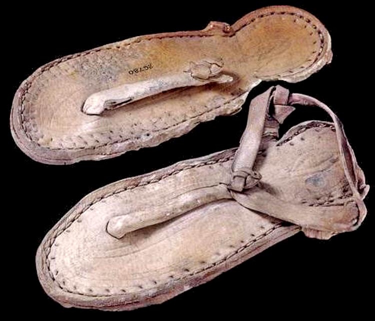
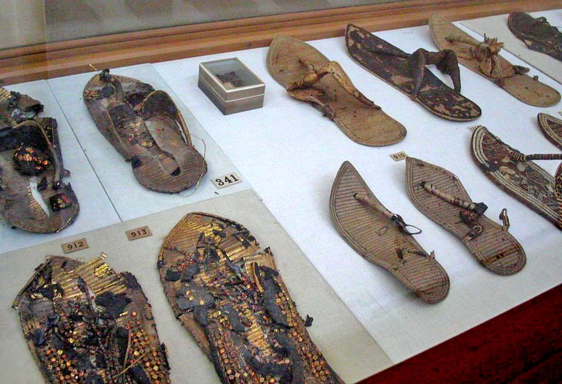
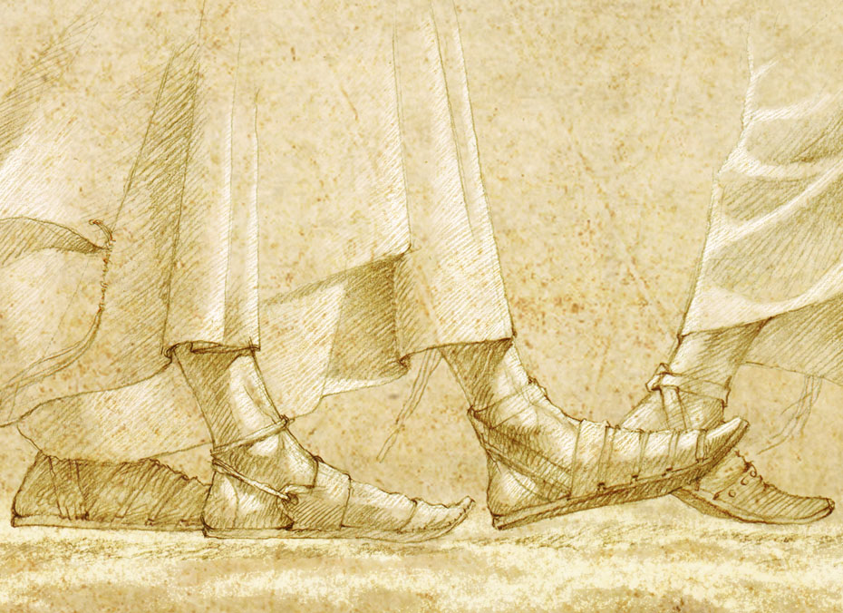
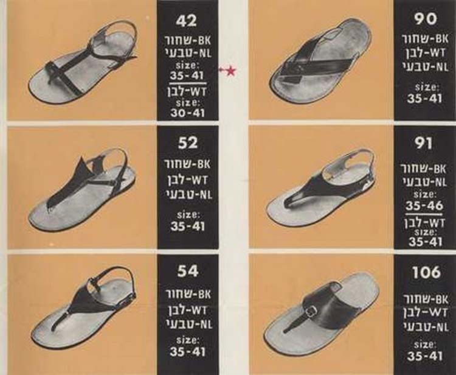
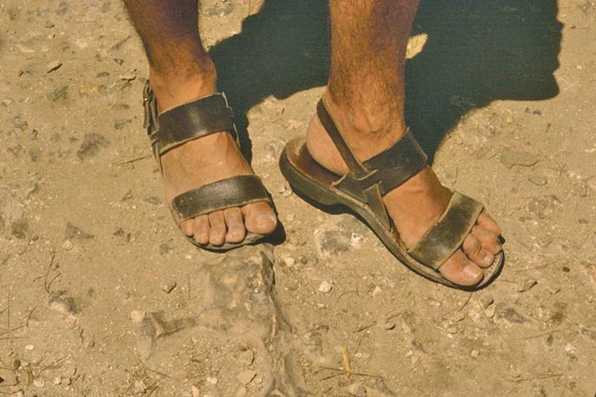

Tell Me About Your Sandals and I'll Tell You Who You Are. Part I
Moshe Rabbenu wore them in the wilderness, ancient kings adorned themselves with more refined models, and the kibbutzniks (kibbutzim are something like Israeli collective farms) made them the ultimate symbol of the Sabra (the name of a cactus; this is what native-born Israelis are called). But in recent years sandals have lost their former greatness and begun to gather dust in the box for old shoes. Why did this happen, and is there a chance of a return to these glorious soles?
Translated from Hebrew and abridged by Ephraim Kalish (nrg.co.il).


The sociologist Tamar El-Or has scrupulously researched the history of sandals in Israel. This article is based on an interview with her.
In the era when Israeli statehood was taking shape, the most important accessory that defined the look of the "typical" citizen of the new country, along with shorts, the cloth hat (kova tembel) and the open-necked shirt, was the so-called "biblical sandals" (sandalim tanachiyim).
In her book "Sandals", recently published in Hebrew by Am Oved, El-Or tells the story of sandals from ancient Egypt to the Israel of our day. A special place in the modern history of Israeli fashion belongs to the shoe company Nimrod.
The word "sandals" came into Hebrew from Greek. The biblical verse (Ex. 3:5) uses the word NA'AL (from the verb meaning to tie, to put on shoes, to lock). Only in later Jewish literature is the word "sandals" used. In biblical times, in El-Or's opinion, people wore sandals with a strap along the foot. (From the Toraart editor: there are other opinions on this. Thus Gadi Pollack, an Orthodox Jew and at the same time a wonderful illustrator, has proposed his own reconstruction of the ANCIENT JEWISH sandals in which our fathers walked through the wilderness. A remarkably interesting explanation of this, with illustrations, see here, in Russian.)

Where, then, did the notion of "sandalei tanachiyim" (biblical sandals, as they are called in Israel today) come from, meaning sandals with two wide crosswise straps? This model was created by shoemakers who had immigrated from Czechoslovakia and Germany and settled mostly in kibbutzim. They made two wide straps that grip the foot better, so that in the cool season the sandals could be worn with socks. Besides, this construction is stronger and more reliable. The prototype was a European model called "Jesus sandals" (Jesuslatschen). Sandals like these are worn by monks dressed in hair shirts, without any colourful decoration, which symbolises modesty and humility.
In Eretz Israel it was decided to give them a name more fitting for the time and place: "sandalei tanachiyim" (biblical sandals). But this, El-Or admits, is only her own conjecture.
"In the fifties and sixties archaeology was very popular, and thousands of ordinary people from the settlements attended events and exhibitions of Israeli archaeology in order to see the connection with the past. Knowing that Jews had lived here in ancient times, something made here that matched the colours of the local landscape stirred the public. When the Israeli consumer saw something made here that suited the character of the place, that did not look bourgeois (there were many socialists among the settlers in Eretz Israel), and was not some old-fashioned suit or closed shoe borrowed from Europe, it gave a sense of newness that was in harmony with the sense of renewal in Zionism.

Nimrod's success story in the country gave it wings to reach countries overseas. Buses full of tourists arrived at the company's only shop, on Dizengoff Street in Tel Aviv, to buy the sandals Israelis wear.
El-Or believes that the company's success depended first of all on the marketing genius of its leader. Yosef Ben-Artzi, one of the founders of Nimrod, placing advertisements in the New York Times, identified these sandals one to one with those our ancestors wore here in this land. And in Nimrod's product catalogues of the sixties the sandals were described as 'authentic Israeli footwear, almost unchanged since the time of the biblical patriarchs. Even today the Virgin of Israel wears the same sandals as in ancient times.'
He managed to create sandals of very high quality; he was able to find simple lines of silhouette and make it unique. His idea was to produce only sandals, a small number of carefully worked-out models, and to sell them eight months a year."
They sold 600–700 pairs a day! One shop! Think what that means! El-Or tells of her American relatives, who had "Nimrod sandals" on their list of must-buy items for Israel. These sandals made their way into travel books in America and Europe. American tourists did not want to go home without them.

Ben-Artzi worked with customers all over the world, and by post. It was almost like internet commerce today. This man was ahead of his time with his commercial ideas."
In part 2 of the article: why sandals became an important symbol of the Zionist movement. Read the continuation here.
 The Jew with a Coin
The Jew with a Coin Daniel Libeskind's Sukkah. The Feast of Sukkot
Daniel Libeskind's Sukkah. The Feast of Sukkot The Passover Haggadah. A Historical Note
The Passover Haggadah. A Historical Note